Code
import pandas as pd
import seaborn as sns
import matplotlib.pyplot as plt
import numpy as np
np.random.seed(23) #kallistiWe are now in our second pass of the data science lifecycle: we introduced a new tool to carry out exploratory data analysis (EDA)—SQL—in the last two lectures. Now we will continue and look at a tool useful for both EDA and modeling.
One of the first things we do in EDA is visualization. Visualization can give us a rough idea how similar/dissimilar some the data points are. For example, let’s consider the following dataset about genes. Each row represents an individual, and each column represents a gene expression. We can visualize the first feature using a rug plot.
| Gene 1 | Gene 2 | Gene 3 | Gene 4 |
|---|---|---|---|
| 10 | 6 | 12 | 5 |
| 11 | 4 | 9 | 7 |
| 8 | 5 | 10 | 6 |
| 3 | 3 | 2.5 | 2 |
| 2 | 2.8 | 1.3 | 4 |
| 1 | 1 | 2 | 7 |
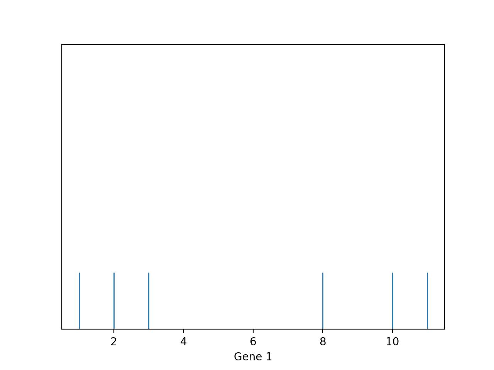
We can see clearly that there are two “clusters” of points: one with lower Gene 1 values; one with higher Gene 1 values. Furthermore, we can visualize two or more features and the clusters are still present.
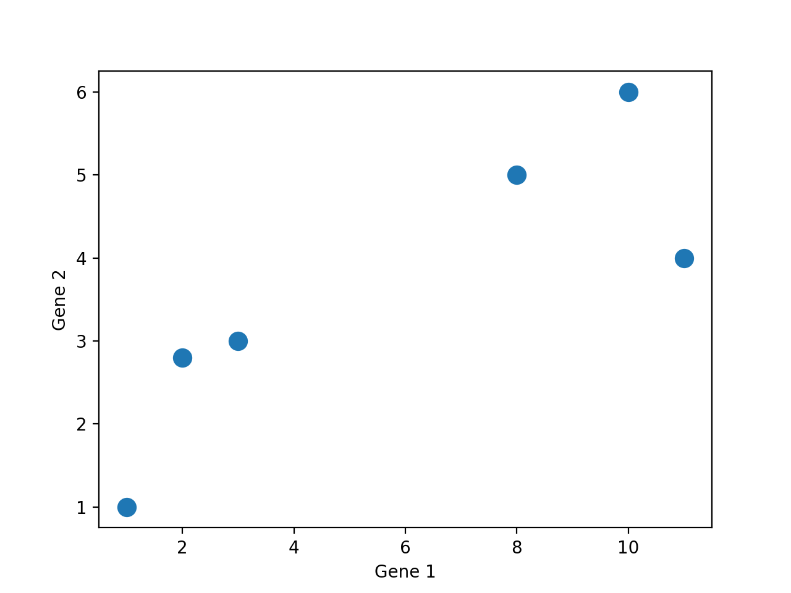
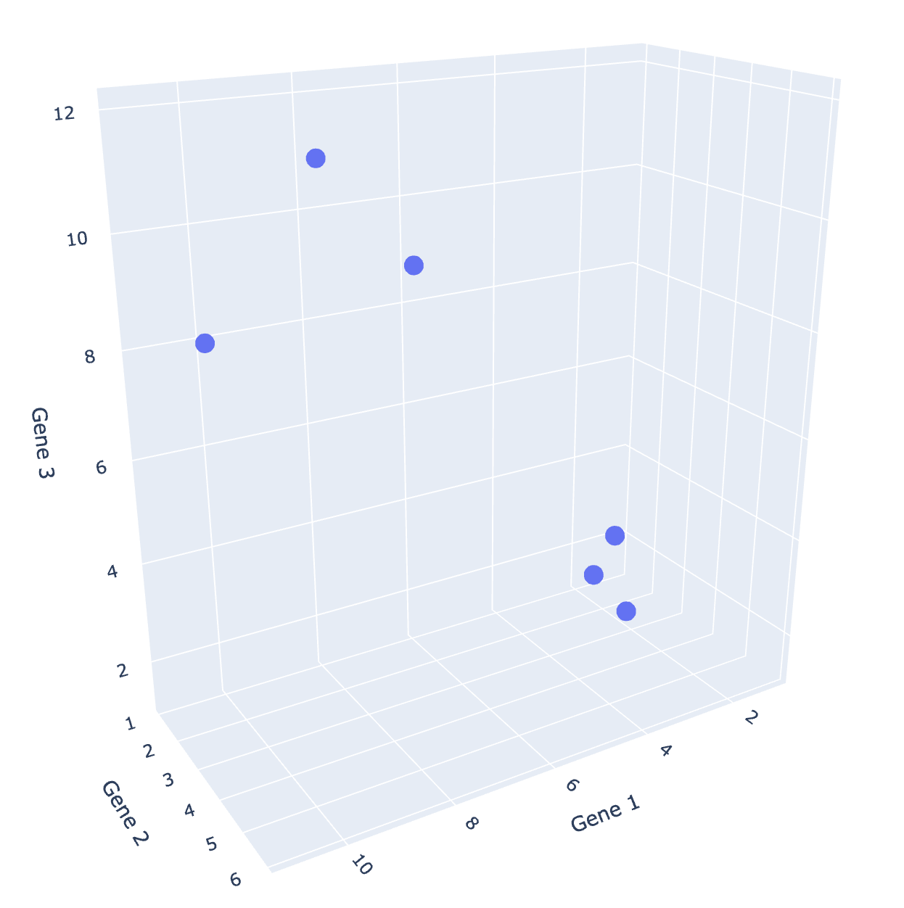
Since we are all 3-dimensional beings, we can’t visualize beyond three dimensions! However, many datasets come with more than three features. What can we do?
A lot of the times in EDA, we perform dimensionality reduction to reduce our dataset to lower dimensions, so we can easily visualize it.
What do we mean by dimensionality reduction? In particular, what is dimensionality?
Previously, we have been working with data tables with rows and columns. Now, we have to be a bit more clear with our wording to follow the language of linear algebra.
Suppose we have a dataset of:
Linear Algebra views our data as a matrix:
In Linear Algebra, the dimension of a matrix is usually its column rank. In Data Science, we will mostly follow this definition, but we have slightly more things to consider.
If we have a dataset about weights, with two columns measuring the same weights in different units (lbs and kg). We will say the dimension of this data matrix is \(1\), because the column rank of this matrix is \(1\). We can visualize this data matrix and see that the data points are indeed 1-dimensional—they lie on a single line.
| Weight (lbs) | Weight (kg) |
|---|---|
| 113.0 | 51.3 |
| 136.5 | 61.9 |
| 153.0 | 69.4 |
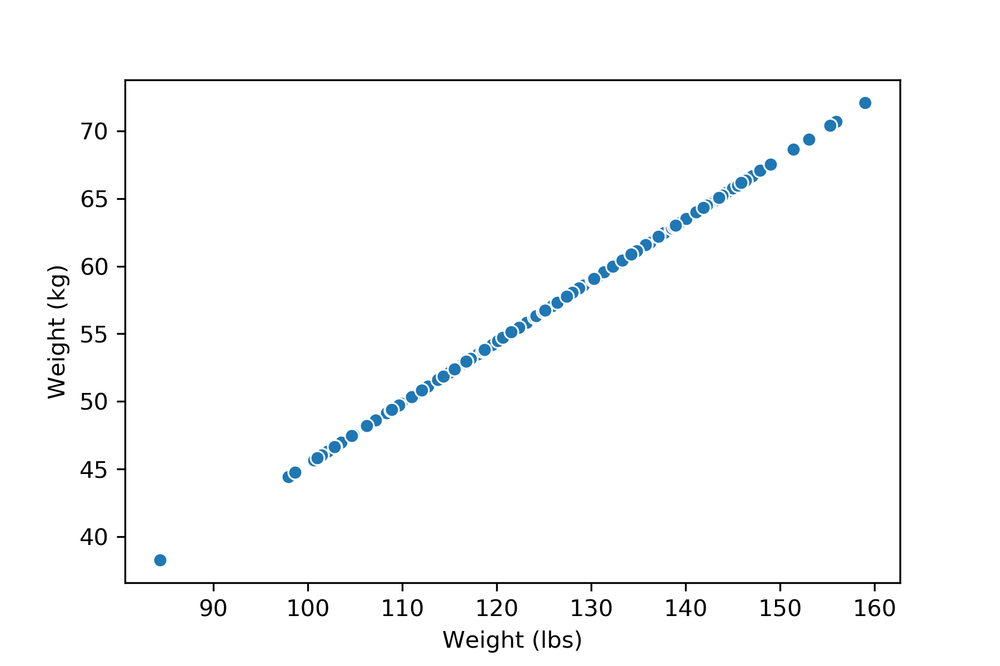
If we add an outlier to this dataset (might be due to a measurement error), however, the rank of the matrix would be \(2\), but because of the nature of the dataset, we would still consider the dimension of this dataset \(1\).
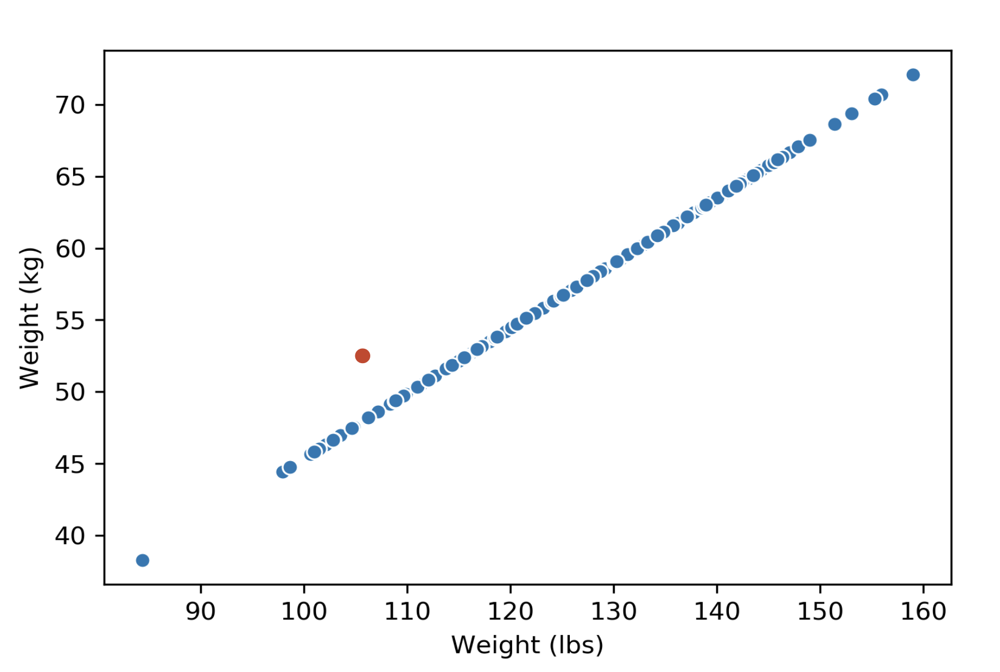
How do we reduce the dimension of a data matrix? We usually do this by projecting the dataset onto a lower dimensional space. There are many different ways we can project. Using the Gene data we’ve seen earlier, we can project all the data points on to the feature Gene 1, or the feature Gene 2.
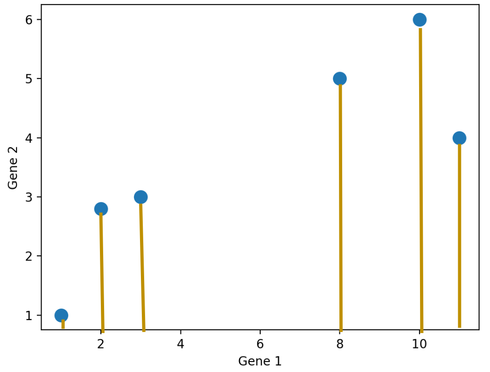
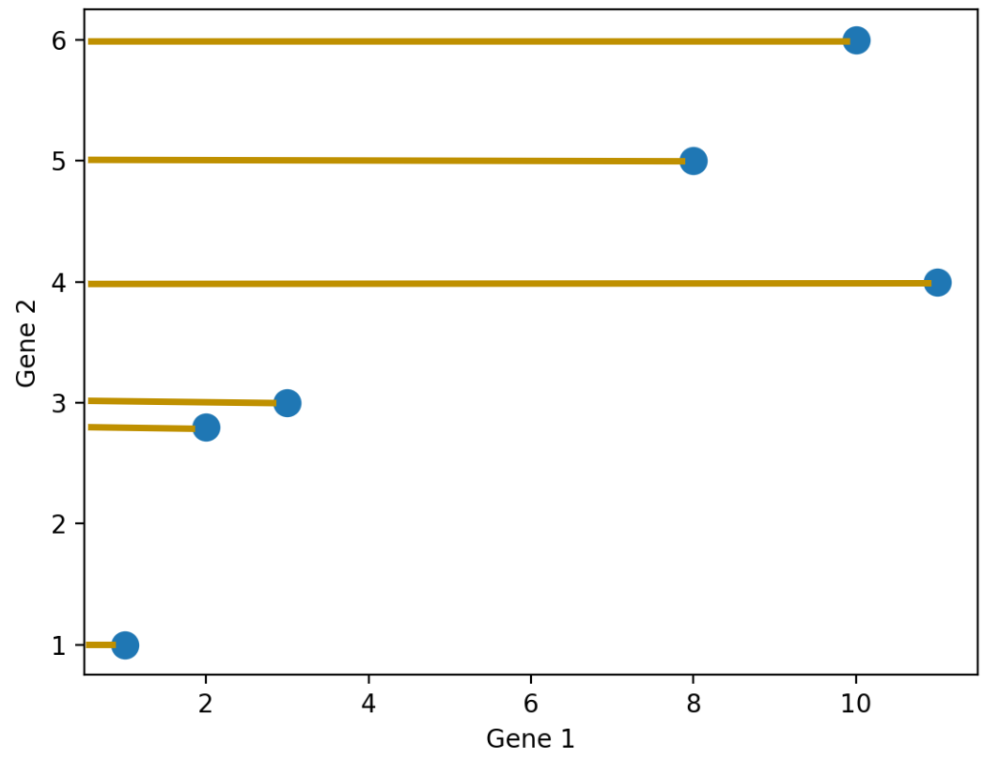
We don’t have to project onto a feature though. For example, we can project the points onto an arbitrary line:
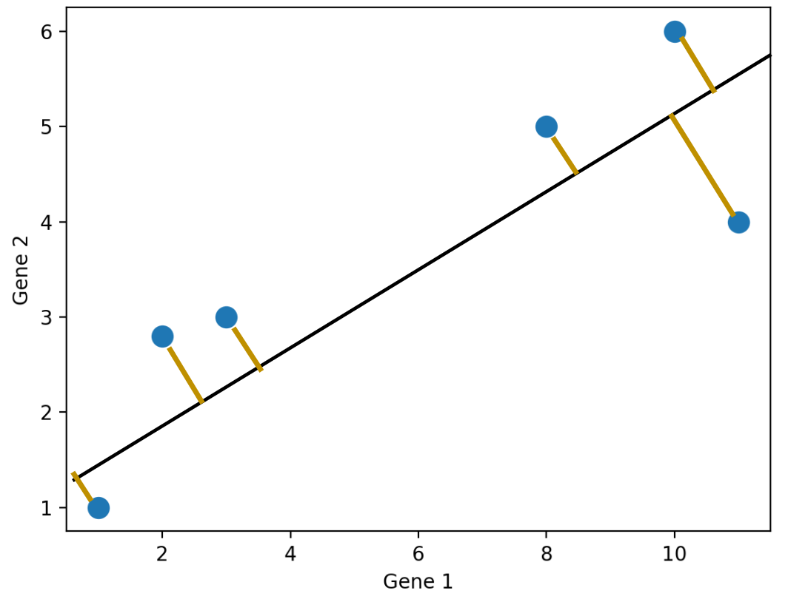
There are so many possible projections—how do we know which one to choose?
In general, we want the projection that is the best approximation for the original data. In other words, we want the projection that capture the most variance of the original data. The method we use to get such a projection is Principal Component Analysis (PCA).
Let’s first see what our goals are when we are performing PCA and why we want to do it in practice.
We mentioned in the last section that we want to find the projection that capture the most variance of the original data. What do we mean by “variance”?
Similar to what we’ve seen before, variability of the data is the most important aspect that we want to maintain. It is the bulk of what we care about when we conduct EDA and modeling.
The total variance for a data matrix is defined as the sum of variances of its columns. To get the total variance of a data matrix, we get the variance of each column individually, and then sum them up.
To capture the “most variance,” one approach is to simply keep the columns with the highest variance—this is similar to what we did above with the Gene dataset where we project the data onto the feature Gene 1. This will sometimes work fine, but we want to do better.
It turns out that PCA does a better job at preserving variances. In fact, PCA will give us the projection that captures the most variances, out of all possible dimensionality reductions of the data matrix.
The goal of PCA is to transform observations from high-dimensional data down to low dimensions (often 2) through linear transformations of the columns. In particular, we want to find a linear transformation that creates a low-dimension representation which captures as much of the original data’s total variance as possible.
Why do we want to do this? We’ve mentioned several reasons before, but here are some more. We often perform PCA during the Exploratory Data Analysis (EDA) stage of our data science lifecycle (if we already know what to model, we probably don’t need PCA); it helps us with
Why do we prefer a 2-dimensional reduction? As we’ve seen, most visualizations are 2D, so it makes the most sense visually.
How do we carry out PCA? Below is an overview, but you are not required to understand or perform PCA this way. We will introduce an easier and more efficient way in a later section.
To do PCA, we
Center the data matrix by subtracting the mean of each attribute column.
Find the principal components \(v_i\) for \(i \in \{1...k\}\), which fulfills the following criteria:
In practice, we don’t carry out this procedure. Instead, we use singular value decomposition (SVD) to find all principal components efficiently.
Before getting into Singular Value Decomposition, we need a refresher on linear algebra. In particular, how we can think of matrices as linear transformations.
Usually when we think about matrix multiplication, we think of it as taking dot product between the rows of the left matrix and the columns of the right matrix.
However, another more linear algebra centric perspective is the columns and transformations view. We’ve briefly used this perspective in the Ordinary Least Squares lecture, but it’s worth mentioning again here. Below is a simple matrix multiplication:
\[ \begin{bmatrix} {2}&{2}&{2}\\ {5}&{8}&{0}\\ \end{bmatrix}\begin{bmatrix} {2}&{1}\\ {1}&{1}\\ {4}&{1}\\ \end{bmatrix}=\begin{bmatrix} {14}&{6}\\ {18}&{13}\\ \end{bmatrix} \]
We can view the operation as taking each column of the left matrix, weight by the corresponding entry in the right matrix:
\[ \begin{bmatrix} {2}&{2}&{2}\\ {5}&{8}&{0}\\ \end{bmatrix}\begin{bmatrix} {2}\\ {1}\\ {4}\\ \end{bmatrix}=2\begin{bmatrix} {2}\\ {5}\\ \end{bmatrix}+1\begin{bmatrix} {2}\\ {8}\\ \end{bmatrix}+4\begin{bmatrix} {2}\\ {0}\\ \end{bmatrix}=\begin{bmatrix} {14}\\ {18}\\ \end{bmatrix} \]
We can think of the left matrix as the original data matrix, and the left matrix as representing a linear transformation. The columns of the left matrix are being transformed according to the rules specified by the right matrix. In this particular example, the right matrix transforms the original data matrix from 3-dimension to 2-dimension.
Understanding this perspective of matrix multiplication is crucial, because PCA does a similar thing: we transform the data matrix by right-multiplying it with a matrix to get the principal components.
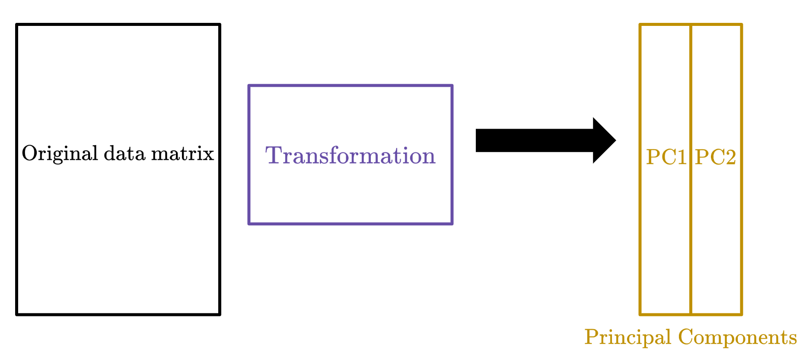
Singular Value Decomposition will help us find this particular transformation matrix.
To understand SVD, we need two more concepts from linear algebra: orthonormality and diagonal matrices.
Orthonormal is a portmanteau of two words: orthogonal and normal. The columns of a matrix is said to be orthonormal if
Orthonormal matrices have what’s called orthonormal inverses. If an \(m \times n\) matrix \(Q\) has orthonormal columns, then \(QQ^{\top} = I_m\) and \(Q^{\top}Q = I_n\).
Usually, the linear transformation represented by an orthonormal matrix is a rotation (and sometimes a reflection) of the coordinate system.
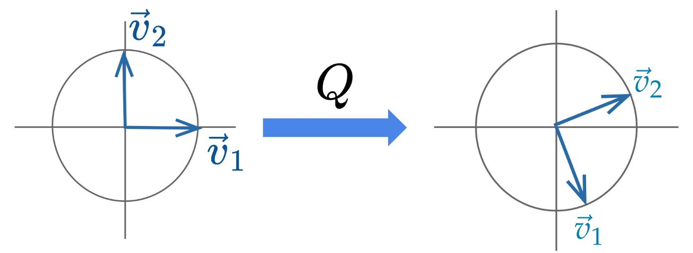
Diagonal matrices are square matrices with non-zero values on the diagonal axis and zero everywhere else. Right-multiplied diagonal matrices scale each column up or down by a constant factor.
\[ \begin{bmatrix} {\mid}&{\mid}&{\mid}\\ {\vec{c}_{1}}&{\vec{c}_{2}}&{\vec{c}_{3}}\\ {\mid}&{\mid}&{\mid}\\ \end{bmatrix}\begin{bmatrix} {a_{1}}&{0}&{0}\\ {0}&{a_{2}}&{0}\\ {0}&{0}&{a_{3}}\\ \end{bmatrix}=\begin{bmatrix} {\mid}&{\mid}&{\mid}\\ {a_{1}\vec{c}_{1}}&{a_{2}\vec{c}_{2}}&{a_{3}\vec{c}_{3}}\\ {\mid}&{\mid}&{\mid}\\ \end{bmatrix} \]
Geometrically, the linear transformation represented by a diagonal matrix can be viewed as a scaling of the coordinate system.
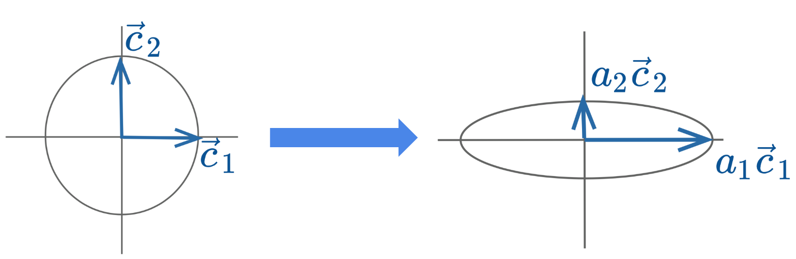
Singular value decomposition (SVD) is an important concept in linear algebra. We will not go much into the theory and details of SVD. Instead, we will only cover what is needed for a data science interpretation.
Singular value decomposition (SVD) describes a matrix decomposition into three matrices. For an \(n \times d\) data matrix \(X\) with rank \(r\), the SVD says:
\[ \Large X = U\Sigma V^{\top} \]
The first matrix \(U\) has the same shape as \(X\): \(n \times d\) and has orthonormal columns. Columns of \(U\) are called the left singular vectors.
\[ \begin{bmatrix} {\mid}&{\mid}&{}&{\mid}&{\mid}&{}&{\mid}\\ {\vec{u}_{1}}&{\vec{u}_{2}}&{\dots}&{\vec{u}_{r}}&{\vec{u}_{r+1}}&{\dots}&{\vec{u}_{d}}\\ {\mid}&{\mid}&{}&{\mid}&{\mid}&{}&{\mid}\\ \end{bmatrix} \]
Since \(U\) is orthonormal, it has an orthonormal inverse: \(UU^{\top} = I_{n}\) and \(U^{\top}U = I_d\). We can also view it as a rotation.
The second matrix \(\Sigma\) is a \(d \times d\) diagonal matrix. Its diagonal contains singular values, ordered from greatest to least. If the rank of the matrix \(X\) is \(r\), there will be \(r\) non-zero singular values.
\[ \begin{bmatrix} {\sigma_{1}}&{0}&{\dots}&{0}&{0}&{\dots}&{0}\\ {0}&{\sigma_{2}}&{\dots}&{0}&{0}&{\dots}&{0}\\ {\vdots}&{\vdots}&{\ddots}&{\vdots}&{\vdots}&{\ddots}&{\vdots}\\ {0}&{0}&{\dots}&{\sigma_{r}}&{0}&{\dots}&{0}\\ {0}&{0}&{\dots}&{0}&{0}&{\dots}&{0}\\ {\vdots}&{\vdots}&{\ddots}&{\vdots}&{\vdots}&{\ddots}&{\vdots}\\ {0}&{0}&{\dots}&{0}&{0}&{\dots}&{0}\\ \end{bmatrix} \]
The third matrix \(V^{\top}\) is a \(d \times d\) matrix with orthonormal rows. We call it “transpose” because we are interested in its rows rather than columns. In other words, the rows of \(V^{\top}\), or the columns of \(V\), are orthonormal. The columns of \(V\) are called the right singular vectors.
\[ \begin{bmatrix} {-}&{\vec{v}_{1}^{\top}}&{-}\\ {-}&{\vec{v}_{2}^{\top}}&{-}\\ {}&{\dots}&{}\\ {-}&{\vec{v}_{d}^{\top}}&{-}\\ \end{bmatrix} \]
Similar to \(U\), \(V\) is orthonormal, so it has an orthonormal inverse: \(VV^{\top} = V^{\top}V = I_{d}\). We can also view it as a rotation.
NumPyIn NumPy, this decomposition algorithm is already written and can be called with np.linalg.svd. There are many versions of SVD out in the wild, and we will need to set the parameter full_matrices to False to get our version.
Now that we have everything we need to carry out our PCA using the tool SVD.
In a previous section, we mentioned PCA gives us the principal components by linearly transforming the original data matrix. Where does that linear transformation come from? SVD!
Recall that SVD says \(X = U\Sigma V^{\top}\). If we right-multiply both sides by \(V\), we will get
\[ \Large XV = U\Sigma V^{\top}V = U\Sigma, \]
since \(V^{\top}V = I_d\). Therefore, this \(V\) matrix is the transformation we are looking for, and \(U\Sigma\) will get us the principal components!
To get the first \(k\) principal components, we can simply take the the first \(k\) columns of the matrix \(U\Sigma\), or equivalently the matrix \(XV\).
Alternatively, to get the first principal component (often called PC1), we can also take the first left singular vector (i.e. the first column of \(U\)) and scale it by the first singular value (i.e. the first diagonal entry in \(\Sigma\)).
We can also take the data matrix \(X\) and right-multiply it by the first right singular vector (i.e. the first column of \(V\)) to get PC1.
We finally know how to perform PCA with Singular Value Decomposition. Let’s summarize the procedure. Given an \(n \times d\) data matrix \(X\), we get the first \(k\) principal components using the following procedure:
NumPyLet’s see how we can carry out this process using Python! We will load in a dataset containing measurements of rectangles: width, height, area, and perimeter.
import pandas as pd
import seaborn as sns
import matplotlib.pyplot as plt
import numpy as np
np.random.seed(23) #kallistirectangle = pd.read_csv("data/rectangle_data.csv")
rectangle.head(5)| width | height | area | perimeter | |
|---|---|---|---|---|
| 0 | 8 | 6 | 48 | 28 |
| 1 | 2 | 4 | 8 | 12 |
| 2 | 1 | 3 | 3 | 8 |
| 3 | 9 | 3 | 27 | 24 |
| 4 | 9 | 8 | 72 | 34 |
We can see this data matrix has rank \(3\), because perimeter is a linear combination of width and height. While we can also get area using width and height, the operation is not linear.
Now let’s carry out PCA.
centered_df = rectangle - np.mean(rectangle, axis = 0)
centered_df.head(5)| width | height | area | perimeter | |
|---|---|---|---|---|
| 0 | 2.97 | 1.35 | 24.78 | 8.64 |
| 1 | -3.03 | -0.65 | -15.22 | -7.36 |
| 2 | -4.03 | -1.65 | -20.22 | -11.36 |
| 3 | 3.97 | -1.65 | 3.78 | 4.64 |
| 4 | 3.97 | 3.35 | 48.78 | 14.64 |
Note, we will need to set the full_matrices argument to False.
U, S, Vt = np.linalg.svd(centered_df, full_matrices = False)Let’s inspect these three matrices first.
The first 5 rows of \(U\):
pd.DataFrame(U).head(5)| 0 | 1 | 2 | 3 | |
|---|---|---|---|---|
| 0 | -0.133910 | 0.005930 | 0.034734 | -0.296836 |
| 1 | 0.086354 | -0.079515 | 0.014948 | 0.711478 |
| 2 | 0.117766 | -0.128963 | 0.085774 | -0.065318 |
| 3 | -0.027274 | 0.183177 | 0.010895 | -0.031055 |
| 4 | -0.258806 | -0.094295 | 0.090270 | -0.032818 |
\(\Sigma\) is returned as an array, because most of the values in the diagonal matrices are zero. NumPy only returns the singular values to save memory.
We can see there are only three non-zero singular values, confirming our previous judgment that the rank of \(X\) is 3.
np.round(S)array([197., 27., 23., 0.])To get \(\Sigma\) into its matrix form, we can use np.diag:
pd.DataFrame(np.diag(np.round(S, 1)))| 0 | 1 | 2 | 3 | |
|---|---|---|---|---|
| 0 | 197.4 | 0.0 | 0.0 | 0.0 |
| 1 | 0.0 | 27.4 | 0.0 | 0.0 |
| 2 | 0.0 | 0.0 | 23.3 | 0.0 |
| 3 | 0.0 | 0.0 | 0.0 | 0.0 |
Finally, \(V^{\top}\):
pd.DataFrame(Vt)| 0 | 1 | 2 | 3 | |
|---|---|---|---|---|
| 0 | -0.098631 | -0.072956 | -0.931226 | -0.343173 |
| 1 | 0.668460 | -0.374186 | -0.258375 | 0.588548 |
| 2 | 0.314625 | -0.640483 | 0.257023 | -0.651715 |
| 3 | 0.666667 | 0.666667 | 0.000000 | -0.333333 |
To carry out matrix multiplication in NumPy, we use the @ symbol.
Let’s try \(U\Sigma\) first
pd.DataFrame(U @ np.diag(S)).head(5)| 0 | 1 | 2 | 3 | |
|---|---|---|---|---|
| 0 | -26.432217 | 0.162686 | 0.807998 | -2.738093e-15 |
| 1 | 17.045285 | -2.181451 | 0.347732 | 6.562857e-15 |
| 2 | 23.245695 | -3.538040 | 1.995334 | -6.025133e-16 |
| 3 | -5.383546 | 5.025395 | 0.253448 | -2.864630e-16 |
| 4 | -51.085217 | -2.586948 | 2.099919 | -3.027184e-16 |
Then \(XV\):
pd.DataFrame(centered_df @ Vt.T).head(5)| 0 | 1 | 2 | 3 | |
|---|---|---|---|---|
| 0 | -26.432217 | 0.162686 | 0.807998 | -2.978358e-15 |
| 1 | 17.045285 | -2.181451 | 0.347732 | 1.462534e-15 |
| 2 | 23.245695 | -3.538040 | 1.995334 | 2.350712e-15 |
| 3 | -5.383546 | 5.025395 | 0.253448 | -1.868135e-15 |
| 4 | -51.085217 | -2.586948 | 2.099919 | -4.088581e-15 |
We can see these are exactly the same.
Let’s get the first two principal components of \(X\).
two_PCs = (U @ np.diag(S))[:, :2]pd.DataFrame(two_PCs).head(5)| 0 | 1 | |
|---|---|---|
| 0 | -26.432217 | 0.162686 |
| 1 | 17.045285 | -2.181451 |
| 2 | 23.245695 | -3.538040 |
| 3 | -5.383546 | 5.025395 |
| 4 | -51.085217 | -2.586948 |
We can get the same thing using \(XV\):
(centered_df @ Vt.T).iloc[:, :2].head(5)| 0 | 1 | |
|---|---|---|
| 0 | -26.432217 | 0.162686 |
| 1 | 17.045285 | -2.181451 |
| 2 | 23.245695 | -3.538040 |
| 3 | -5.383546 | 5.025395 |
| 4 | -51.085217 | -2.586948 |
We said earlier that PCA gives us a projection that captures the most variance. How do we know how much variance is captured?
It turns out the singular values tell us this!
Formally, the \(i\)-th singular value tells us the component score—how much of the data variance is captured by the \(i\)th principal component. Suppose the number of data points is \(n\):
\[i\text{-th component score} = \frac{(i\text{-th singular value})^2}{n}\]
Summing up the component scores is equivalent to computing the total variance.
You might have noticed that we always center our data matrix \(X\) before performing PCA. We do this because only when we center the matrix will we have this nice interpretation of the singular values. In other words, if we don’t center the data matrix, singular values will not convert nicely to the component scores/variances captured by each principal component.
The formal proof of this is out of scope, but if you are interested, take a look at the next section.